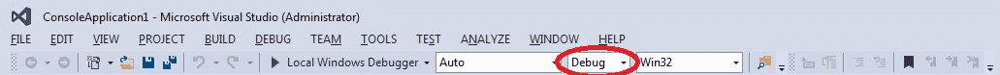
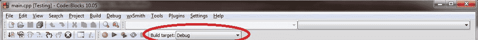

A build configuration (also called a build target) is a collection of project settings that determines how your IDE will build your project. The build configuration typically includes things like what the executable will be named, what directories the IDE will look in for other code and library files, whether to keep or strip out debugging information, how much to have the compiler optimize your program, etc… Generally, you will want to leave these settings at their default values unless you have a specific reason to change something.
When you create a new project in your IDE, most IDEs will set up two different build configurations for you: a release configuration, and a debug configuration.
The debug configuration is designed to help you debug your program, and is generally the one you will use when writing your programs. This configuration turns off all optimizations, and includes debugging information, which makes your programs larger and slower, but much easier to debug. The debug configuration is usually selected as the active configuration by default. We’ll talk more about debugging techniques in a later lesson.
The release configuration is designed to be used when releasing your program to the public. This version is typically optimized for size and performance, and doesn’t contain the extra debugging information. Because the release configuration includes all optimizations, this mode is also useful for testing the performance of your code (which we’ll show you how to do later in the tutorial series).
When the Hello World program (from lesson 0.7 -- Compiling your first program) was built using Visual Studio, the executable produced in the debug configuration was 65KB, whereas the executable built in the release version was 12KB. The difference is largely due to the extra debugging information kept in the debug build.
Although you can create your own custom build configurations, you’ll rarely have a reason to unless you want to compare two builds made using different compiler settings.
Best practice
Use the debug build configuration when developing your programs. When you’re ready to release your executable to others, or want to test performance, use the release build configuration.
Some IDEs (e.g. Visual Studio) also create separate build configurations for different platforms. For example, Visual Studio creates build configurations for both the x86 (32-bit) and the x64 (64-bit) platforms.
Switching between build configurations
For Visual Studio users
There are multiple ways to switch between debug and release in Visual Studio. The easiest way is to set your selection directly from the Solution Configurations dropdown in the Standard Toolbar Options:

Set it to Debug for now.
You can also access the configuration manager dialog by selecting Build menu > Configuration Manager, and change the active solution configuration.
To the right of the Solutions Configurations dropdown, Visual Studio also has a Solutions Platform dropdown that allows you to switch between x86 (32-bit) and x64 (64-bit) platforms.
For Code::Blocks users
In Code::Blocks, you should see an item called Build Target in the Compiler toolbar:

Set it to Debug for now.
For gcc and Clang users
Add -ggdb to the command line for debug builds and -O2 -DNDEBUG for release builds. Use the debug build options for now.
For GCC and Clang, the -O# option is used to control optimization settings. The most common options are as follows:
-O0is the recommended optimization level for debug builds, as it disables optimization. This is the default setting.-O2is the recommended optimization level for release builds, as it applies optimizations that should be beneficial for all programs.-O3adds additional optimizations that may or may not perform better than-O2depending on the specific program. Once your program is written, you can try compiling your release build with-O3instead of-O2and measure to see which is faster.
See https://gcc.gnu.org/onlinedocs/gcc/Optimize-Options.html for information on optimization options.
For VS Code users
When you first ran your program, a new file called tasks.json was created under the .vscode folder in the explorer pane. Open the tasks.json file, find “args”, and then locate the line “${file}” within that section.
Above the “${file}” line, add a new line containing the following command (one per line) when debugging:
"-ggdb",
Above the “${file}” line, add new lines containing the following commands (one per line) for release builds:
"-O2",
"-DNDEBUG",
Modifying build configurations
In the next few lessons, we’ll show you how to tweak some settings in your build configurations. Whenever changing a project setting, we recommend making the change in all build configurations.
This will help prevent making the change to the wrong build configuration, and ensure the change is still applied if you happen to switch build configurations later.
Tip
Whenever you update your project settings, make the change for all build configurations (unless it’s not appropriate for some reason).